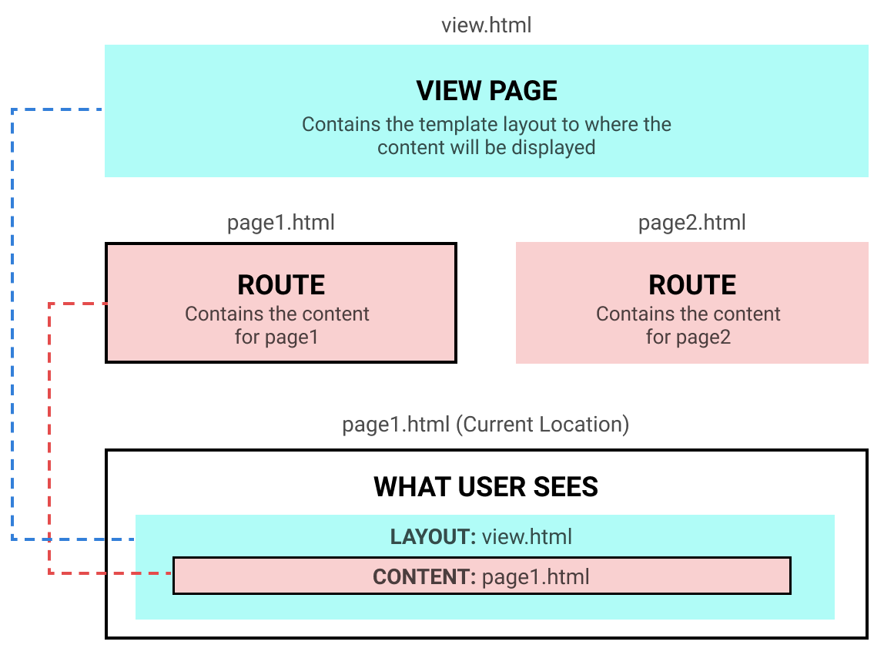

<script src="../../../sleeve/core/lib/route.js"></script>

<route view="../../docs_view.html" style="display: none">
    <content name="title">Content Routing</content>
    <content name="root-dir">../</content>
    <content name="content">
        <b>Content Routing</b> is used for changing the page content while 
        changing the current location, without reloading the page.

        <br><br>

        Compared to <a href="page-routing.html">Page Routing</a>, 
        this type of routing does not need pages to include everything 
        to display. Instead, they would only list down the content,
        and then refer to a common view page.

        <br><br>

        <h5>How Does It Work</h5>

        The diagram below shows two routes, one is from <code>page1.html</code>
        and the other is from <code>page2.html</code>. There is also a <code>view.html</code>
        for layout. Suppose <code>page1.html</code> is the current location.

        <br>
        
        

        <br><br>

        <span style="font-size: 13px">view.html</span>
        <div style="height: 70px; width: 100%; border: 2px solid gray">
            VIEW PAGE
        </div>

        <br><br>
        <span style="font-size: 13px">page1.html</span>
        <div style="width:200px; box-sizing: border-box; padding: 20px; border: 2px solid gray">
            <div style="height: 50px; width: 100%; border: 1px solid gray">
                CONTENT VALUES
            </div>
            <div style="margin-top: 30px; height: 70px; width: 100%; border: 1px dashed gray">
                VIEW PAGE
            </div>
        </div>
        

        <br><br>

        To enable, add the <code>content-routing</code> attribute to the anchor element.

        <br><br>

        <block-code mode="html">
&lt;a href="somepage.html" content-routing>Go there&lt;/a>
        </block-code>

        <br><br>

        When the link is clicked, Sleeve then takes the target <code>somepage.html</code>,
        updates the location, and displays the page in the same display without reloading.


        <br><br><br>

        Learn more about routes in Sleeve and other ways to routing <a href="./routes.html">here</a></li>.

    </content>
</route>